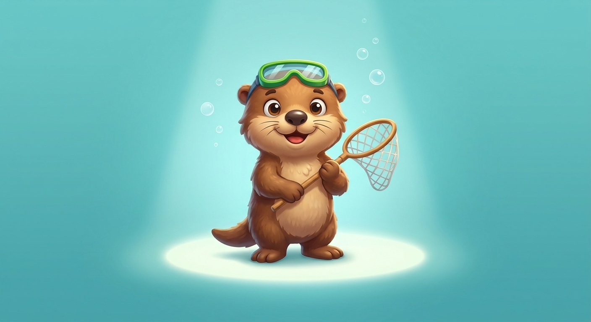
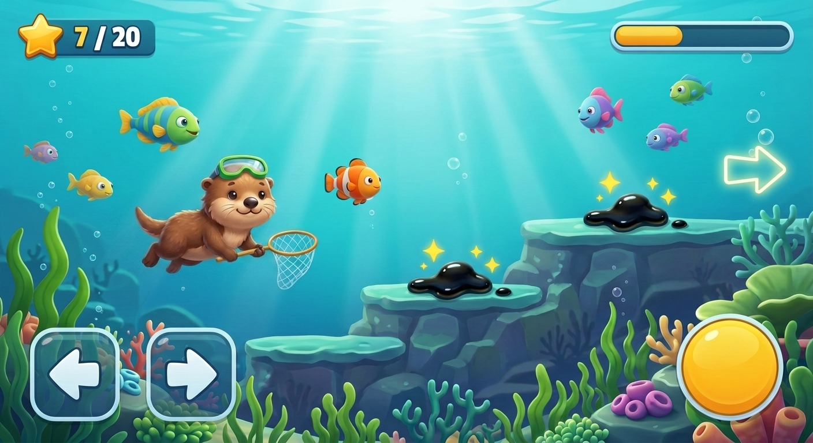
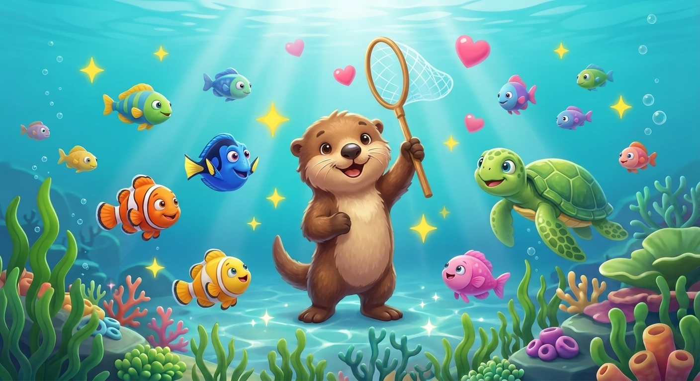

Unser Weg zum Spiel: Was wir schon entschieden haben – und was als Nächstes dran ist.
Rettet die Umwelt – die Natur schützen und das Meer sauber machen.
Läuft im Browser, auf Tablet und Computer. Auf Deutsch.
Unterwasser-Sammelspiel. Zuerst als „Side-Scroller" gedacht – jetzt frei schwimmen (siehe Nr. 9).
gewählt in „Wie möchtest du spielen?"Carl der Otter – mit Taucherbrille und Kescher.
gewählt in „Wähle deinen Helden!"
Das verschmutzte Meer – ausgelaufenes Öl einsammeln.

Erst „ganz friedlich" – aber Josephine hat sich umentschieden: Es soll Gefahr geben! Wie viel, sucht sie gerade in Prototyp 4 aus. Fest steht: Verlieren bleibt immer sanft – Carl ist nie in echter Not.
wird neu entschieden · Prototyp 4 spielenEin echtes Browser-Spiel (HTML5/Canvas, kein Baukasten) – das man selbst ins Internet stellen kann. Papa programmiert mit, Josephine gestaltet.
Kein Sound für die allererste Version (die „MVP"). Musik & Geräusche kommen später.
Frei schwimmen – in alle Richtungen (oben, unten, links, rechts), schön schwebend. Kein Hüpfen.
ausprobiert in „Prototyp 1" · nochmal spielenÖl mit dem Kescher fangen – Knopf drücken und aktiv fangen.
ausprobiert in „Prototyp 2" · nochmal spielenDas saubere Meer – ist alles Öl weg, wird das Wasser wieder klar und alle Tiere freuen sich.
gewählt in „Wie fühlt sich Gewinnen an?" · nochmal ansehen
Ein offener Meer-Bereich (ein Bildschirm), zuerst fürs Tablet, ganz einfach: schwimmen + Öl fangen + gewinnen.
Die erste spielbare Version ist fertig – schwimmen, Öl fangen, sauberes Meer! Deine Wahl aus Prototyp 3 und 4 bauen wir als Nächstes ein.
Josephine wollte mehr Spannung – deshalb gibt es jetzt vier Gefahr-Stufen zum Fühlen. Danach: die Schwierigkeit fein einstellen.
Freche Monster, die vor dem Kescher davonflitzen 😜, eine Qualle, die dir Öl abluchst , oder richtige Herzen ❤️? Probier alle vier Stufen!
Treibt das Öl davon? Wird es mehr, wenn man trödelt? Gibt es Sterne? Dreh an den Schwierigkeits-Reglern!